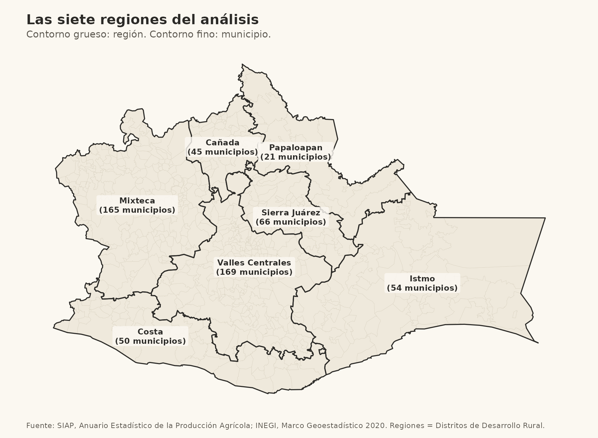
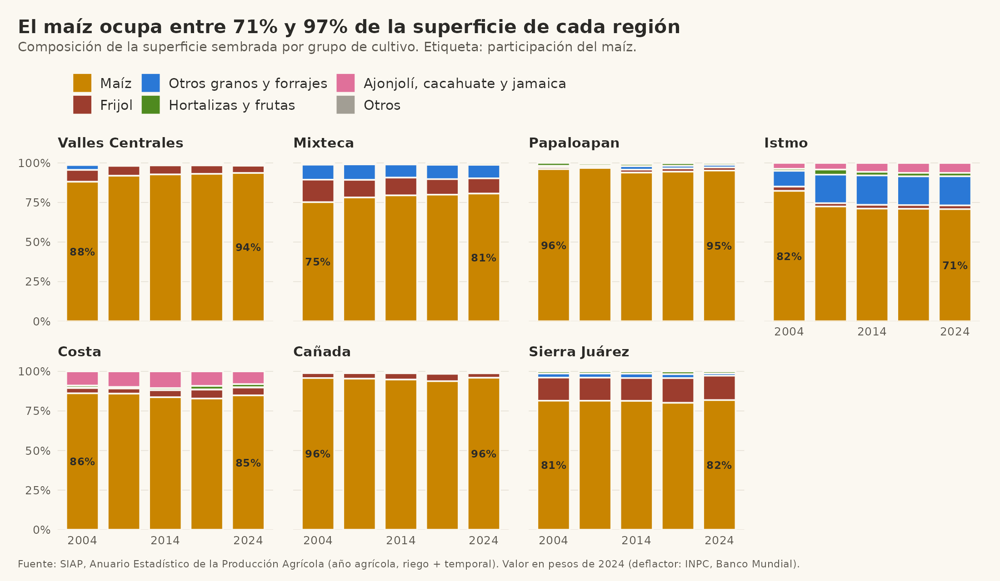
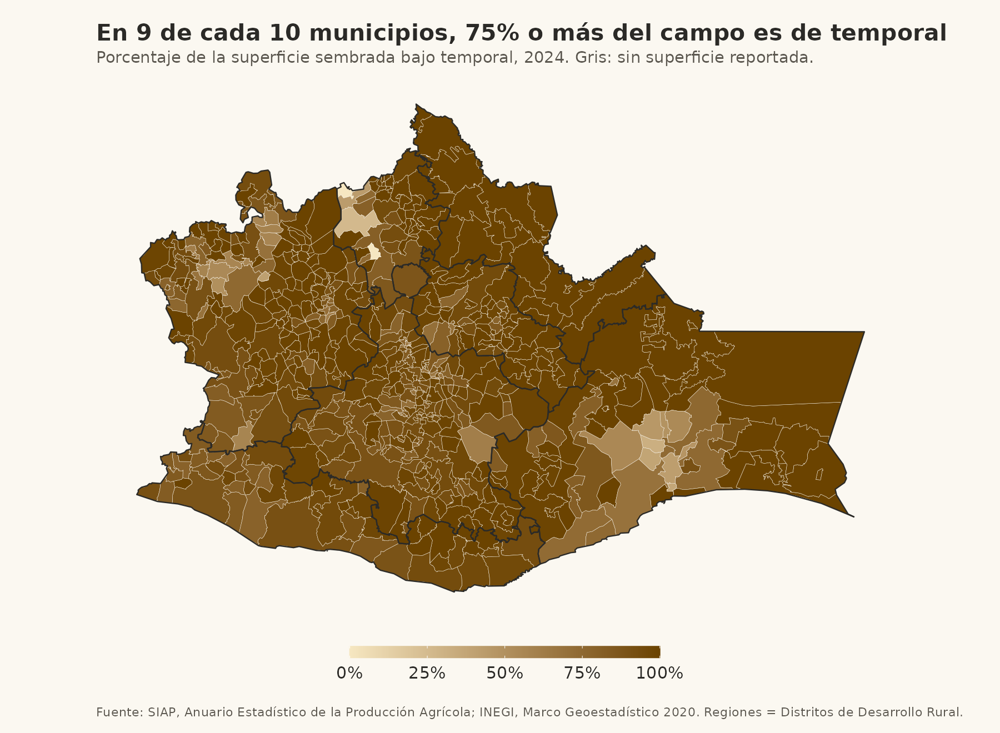
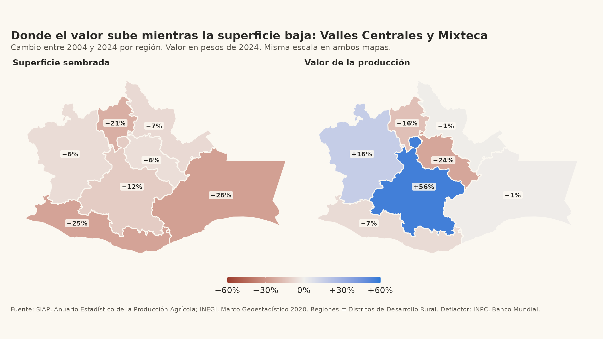
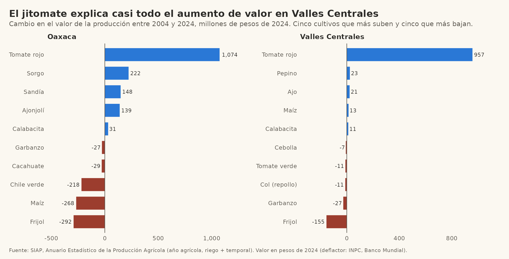
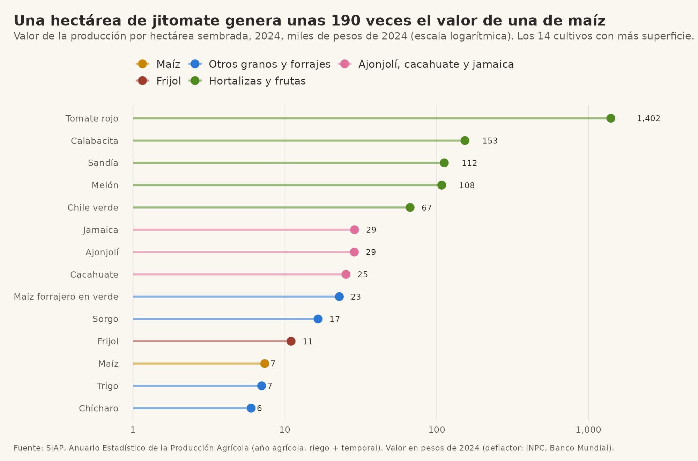
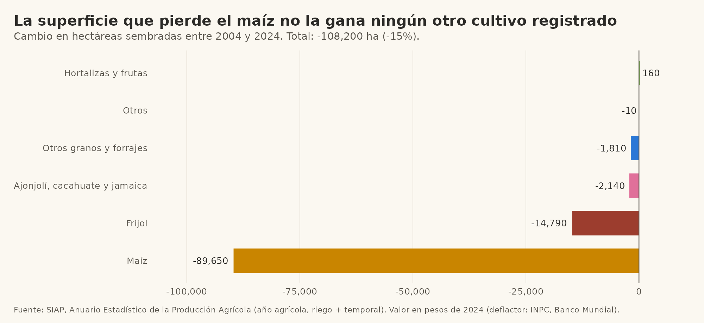
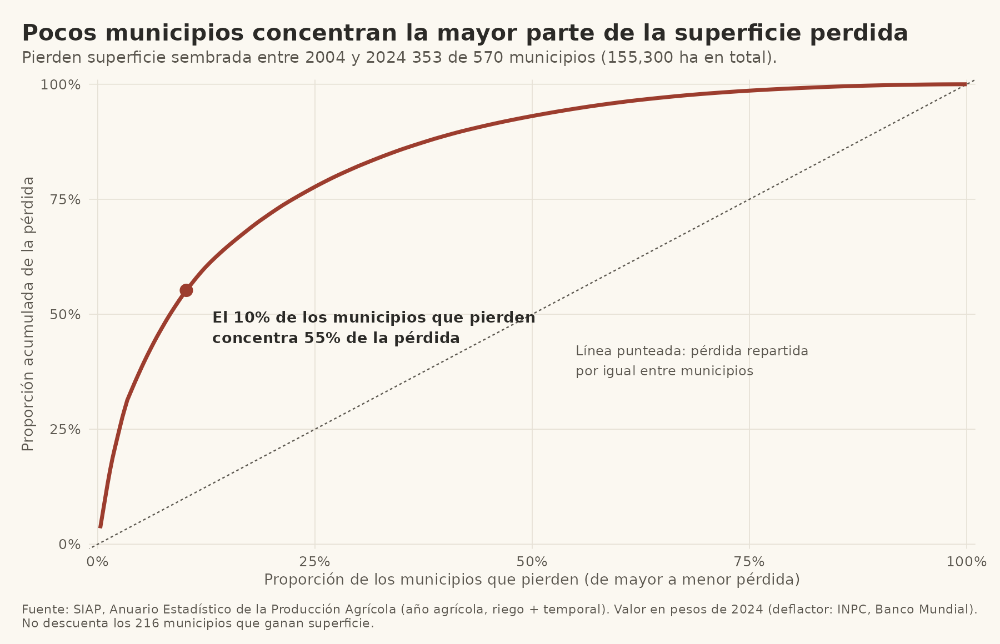
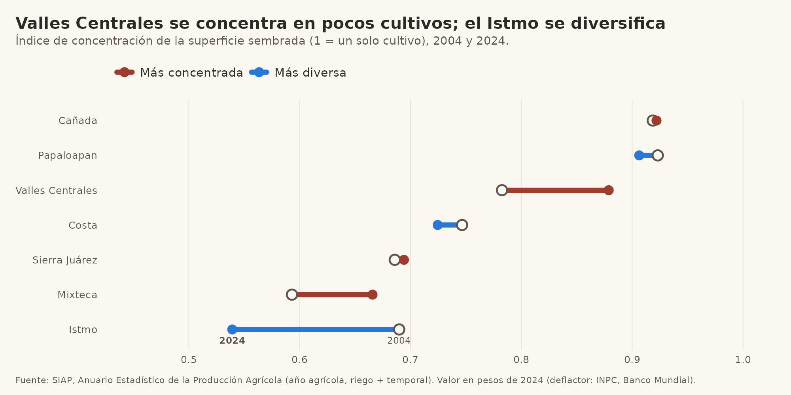

Oaxaca: brechas en la información agrícola, 2004-2024
Proyecto realizado como asistente de investigación en NORIA, con su autorización. Es un ejercicio analítico para el portafolio, no una base para decidir políticas.
Pregunta
Este análisis es parte de una investigación más amplia sobre por qué las personas productoras agrícolas empiezan a sembrar ciertos cultivos (lícitos o ilícitos) y por qué lo hacen de manera formal o informal. El objetivo de largo plazo es proponer medidas que fortalezcan su autonomía, tanto frente al Estado como frente a grupos armados. No busca aumentar la productividad por hectárea ni empujar a nadie hacia el sector formal.
La pregunta de esta etapa es más modesta: con la información oficial disponible, ¿qué cambió en lo que se siembra en Oaxaca entre 2004 y 2024, y dónde hay huecos en esa información?
Datos y alcance
- Fuente: Cierre agrícola del Servicio de Información Agroalimentaria y Pesquera (SIAP), por municipio, para 2004, 2009, 2014, 2019 y 2024, en riego y temporal.
- Unidad: hectáreas sembradas y valor de la producción por municipio. No hay datos de parcelas ni de productores individuales.
- Valores: en miles de pesos, expresados en pesos de 2024 con el índice de precios al consumidor del Banco Mundial.
- Regiones: las 7 de SIAP (Distritos de Desarrollo Rural). No coinciden del todo con las 8 regiones oficiales del estado; la discrepancia viene de las propias fuentes del gobierno estatal y de SIAP.
Solo contiene cultivos cíclicos (otoño-invierno y primavera-verano): 43 cultivos, de maíz a flores. No incluye perennes como café, mango, agave o caña, ni pastos. Por eso, cuando aquí se habla de “la superficie”, se trata de la superficie sembrada de cultivos cíclicos registrados, no de toda la tierra agrícola de Oaxaca. Tampoco incluye lo que se cultiva fuera del registro.
Las regiones

Qué se siembra
El maíz domina: ocupa entre 71% y 97% de la superficie de cada región, y en 9 de cada 10 municipios al menos tres cuartas partes del campo es de temporal.


Superficie y valor se mueven distinto
Entre 2004 y 2024 la superficie sembrada baja en todas las regiones. El valor de la producción, en pesos constantes, solo sube en Valles Centrales y en la Mixteca.

Esa divergencia no es una tendencia general. En Valles Centrales casi todo el aumento viene de un cultivo, el jitomate:

Una hectárea de jitomate genera unas 190 veces el valor de una de maíz (unos 1.4 millones de pesos frente a unos 7 mil), pero ocupa poco más de 900 hectáreas en todo el estado.

¿A dónde se va la tierra?
La superficie sembrada de cíclicos bajó 15% (unas 108 mil hectáreas). El maíz explica 83% de esa baja y ningún otro cultivo registrado crece de forma apreciable: la tierra que deja de sembrarse con maíz no aparece sembrada con otra cosa dentro de este registro.

La pérdida tampoco es pareja. Pierden superficie 353 de los 570 municipios, y el 10% de ellos concentra 55% de la pérdida.

La concentración también se ve entre cultivos. Valles Centrales y la Mixteca se concentran en menos cultivos, y el Istmo se diversifica:

Hipótesis
Lo que sigue son hipótesis de trabajo, no conclusiones. Cada una indica qué sostienen hoy los datos y qué haría falta para ponerla a prueba.
| Hipótesis | Qué se observa hoy | Qué falta | |
|---|---|---|---|
| H1 | La superficie que se pierde sale del registro, más que cambiar a otro cultivo registrado. | El maíz y el frijol pierden unas 104 mil ha; las hortalizas ganan 160. | Comparar con el Censo Agropecuario 2022 y con padrones de programas. |
| H2 | Parte de la tierra pasa a perennes, pastos u otros usos que esta base no recoge. | No se puede evaluar: la base no los incluye. | Descargar el cierre agrícola de perennes y revisar uso de suelo. |
| H3 | El acceso a cultivos de alto valor está limitado por riego y capital. | El valor crece donde hay riego; el jitomate pesa mucho en poca tierra. | Infraestructura de riego, crédito, caminos y compradores. |
| H4 | La baja del valor del maíz refleja precios y costos, no solo menos tierra. | El valor real del maíz cae, pero la base no separa precio de volumen. | Volumen de producción, rendimiento y precios medios rurales (SIAP). |
| H5 | La pérdida se concentra en municipios de mucha superficie sembrada. | El cuarto más grande de municipios en 2004 explica 82% de la pérdida neta. | Tenencia de la tierra y estructura de las unidades de producción. |
Preguntas abiertas
Los datos oficiales dejan sin explicar lo que más importa para la investigación:
- ¿Qué tan completo es el registro? Cada municipio reporta superficie en todos los años, pero eso no dice qué tan cerca está de lo que realmente se siembra. Falta contrastarlo con otras fuentes.
- ¿Qué hay fuera del registro? Los cultivos no registrados no aparecen en estos datos por construcción, y por eso no se puede inferir nada sobre ellos desde aquí.
- ¿Cómo se producen las diferencias de valor? La brecha entre cultivos puede deberse a precios, intermediarios, tecnología o acceso a mercados. No se sabe quién captura el valor.
- ¿Qué decide cambiar de cultivo? Los agregados regionales muestran contexto, no decisiones. Cruzar con migración y remesas, crédito, programas, tenencia de la tierra y seguridad permitiría empezar a responder, a nivel municipal y con cuidado de no atribuir conductas individuales a partir de promedios.
- ¿Qué cambia cuando una región se diversifica? El Istmo pasó de un cultivo dominante a un reparto más parejo. Falta saber qué lo explica y si fue decisión de los productores o vino de programas, compradores o precios.
Limitaciones
- Solo cultivos cíclicos registrados; sin perennes, pastos ni cultivos fuera del registro.
- Datos agregados por municipio, sin parcelas ni productores.
- El valor depende de los precios que reporta SIAP y del deflactor elegido.
- Cinco cortes en el tiempo (2004, 2009, 2014, 2019, 2024), sin los años intermedios.
- Las regiones de SIAP no coinciden del todo con las 8 regiones oficiales del estado.
- Las hipótesis son para orientar la investigación, no se prueban estadísticamente aquí.
Cómo reproducirlo
El código está en codigo/ y los datos limpios en datos/. Los scripts se corren en orden desde la carpeta del proyecto:
01_limpieza.R: lee los Excel de SIAP y escribe los CSV.02_graficas.R: figuras 1 a 6.03_mapas.R: mapas (descarga la geografía del INEGI la primera vez).04_cultivos.R: figuras 10 a 12.05_hipotesis.R: figuras 13 y 14.
Fuentes: SIAP, Anuario Estadístico de la Producción Agrícola (nube.agricultura.gob.mx); INEGI, Marco Geoestadístico 2020; Banco Mundial, índice de precios al consumidor de México.